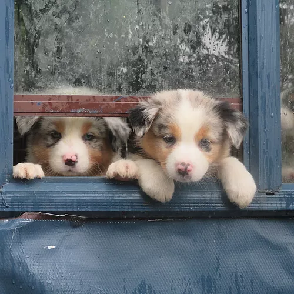
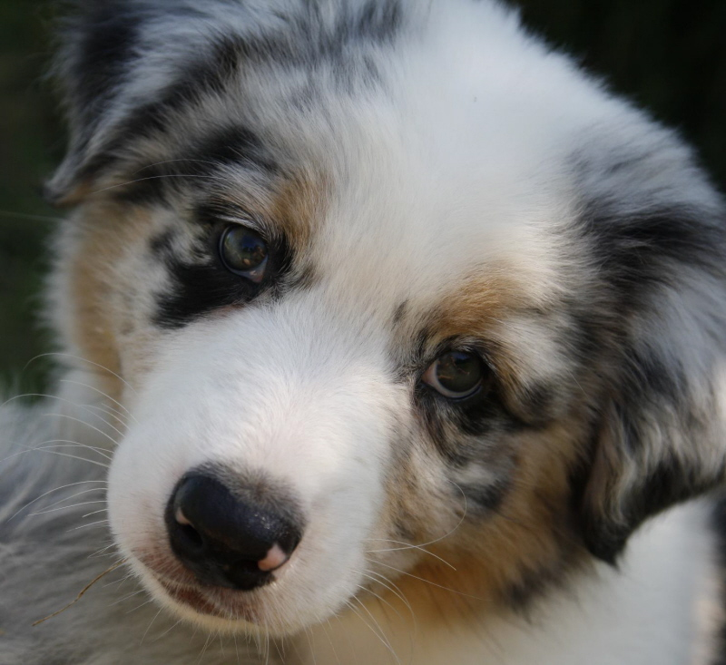
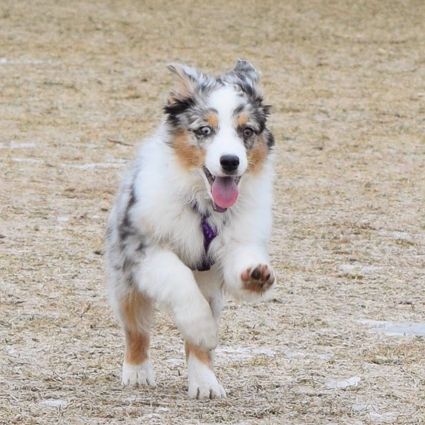

Our Puppies
Robin's Aussies are the most beautiful australian shepherds you've ever seen. They come in every colour you can imagine from deep reds, to shimmering golds to marvelous red and blue merles.

- 
- 

Welcome to Robin Australian Shepherds!
Preserving the excellence of the 1980's Hall of Fame aussies: exceptional structure, genetic clarity, outstanding and instinctive temperaments.
Our Aussie Family is an amazing, agreeable and entertaining group.
All of our aussies are 'intact' (none are spayed or neutered). Their ages extend from young to senior; the seniors being over a decade in years.
Robin's Aussies are the most beautiful australian shepherds you've ever seen. They come in every colour you can imagine from deep reds, to shimmering golds to marvelous red and blue merles.
C.K.C./ ASCA/ A.K.C Registered Australian Shepherds since 1993.
Descendents of ASCA's #1 Hall Of Fame Sire Champion Briarbrooks Center Ring, 1980, our aussies are both beautiful and exceptionally bright.
Exceptional Full Tailed & Natural Bob Tailed Aussies. Learn more about your future puppy's lineage here.